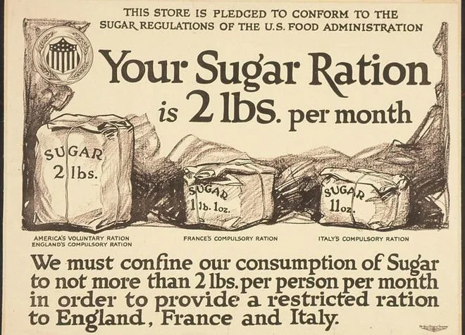
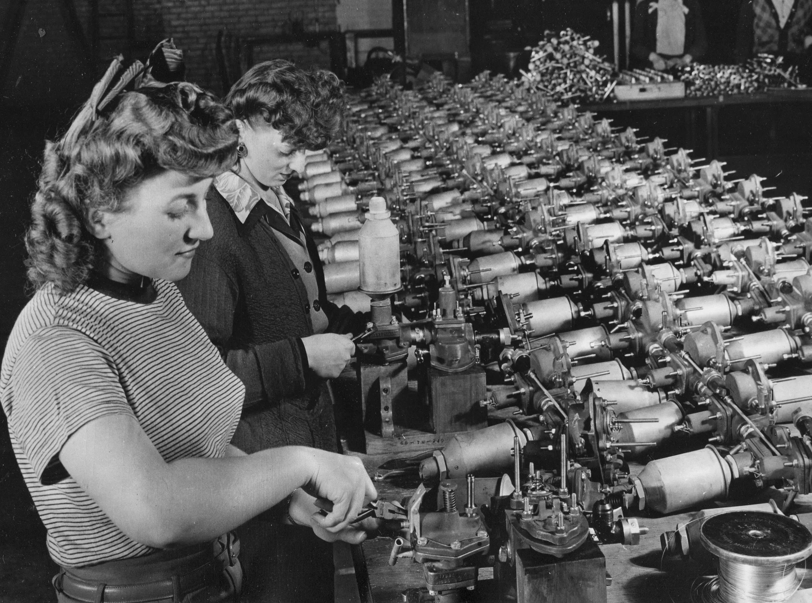
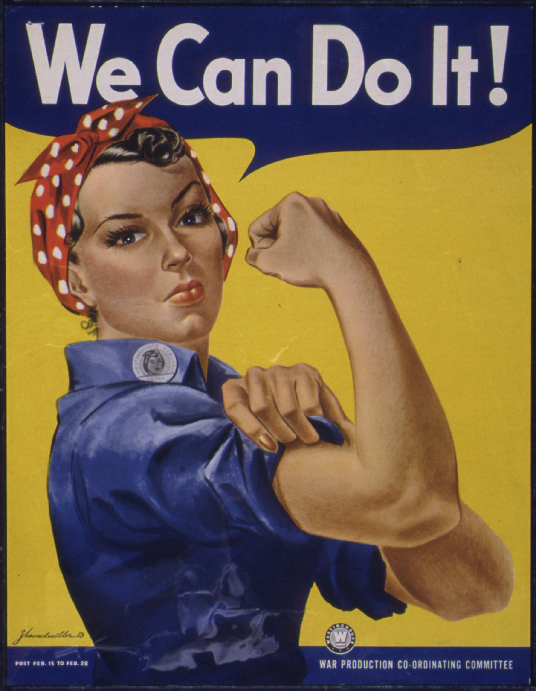
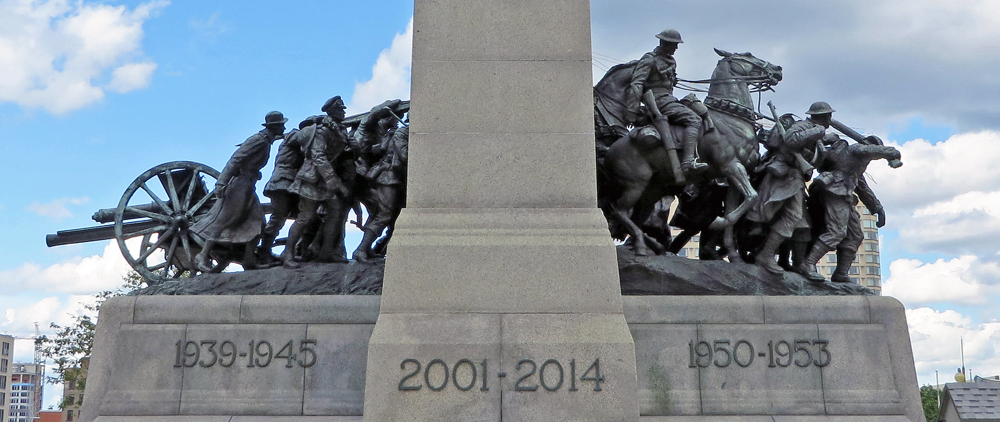

Civilane Role During the War and Changes to Society
While the military strategies and battles during the second world war have always been documented, the impact of civilians are just as important. Millions of people on the home front went through very dramatic changes in their everyday lives with economies completely being restructured and social roles transforming away from the norms during that time.
Citizens had to go through very strict rationing of fuel, food and many other essential goods. These measures were very challenging but made sure that there was enough food, fuel and more for everyone and at the same time making sure there were enough resources to keep the war going. Community gardens, innovative solutions and recycling initiatives were ways for people to cope with these shortages
World War II caused factories to shift from what they were making to producing weapons and other key supplies which not only kept the war going but also helped the economy recover and also helped technology progress.
Probably the most important change that occurred on the homefront were the transformations of gender roles in society. With a high number of men being overseas fighting the war, women took over many roles that were not available to them before. Women worked in factories, took administrative and technical positions in society and also served as nurses. These changes were not just crucial to sustain war efforts but also laid the foundation for important changes in gender equality and broke many societal norms.
 World War II affected the world more than just economically and culturally. The war still affects us to this day. The hardships that were shared during that time along with the collective resilience forged during the years of war brought communities from all around the world together. Museums, memorials and commemoration events all help remind us of the sacrifices our ancestors made for our freedom along with the strength of the human spirit when facing adversity.
As we have just seen, even those living on the home front far from battles were affected by the war but their sacrifices and decisions played an important role in providing goods and weapons to keep the war going and to help the soldiers who were fighting for our freedom. The changes discussed laid the foundations for today's world and we would not be where we are today without those who stepped up when they were needed most. We are asked to remember all of those fighting in the home front as their contributions were as important as the battles.